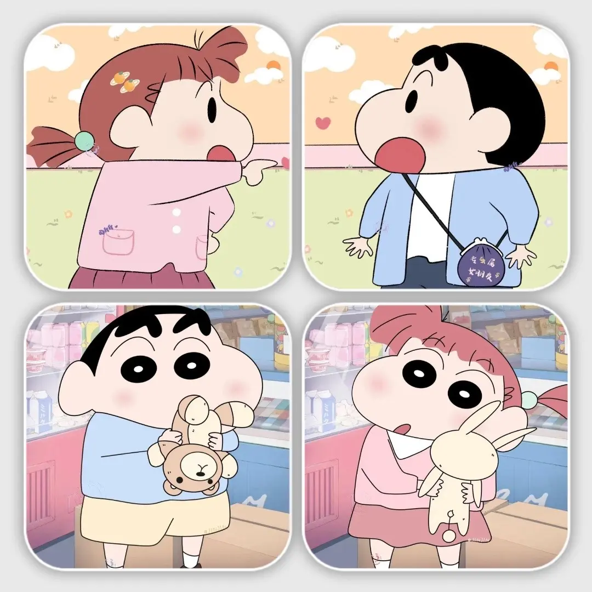
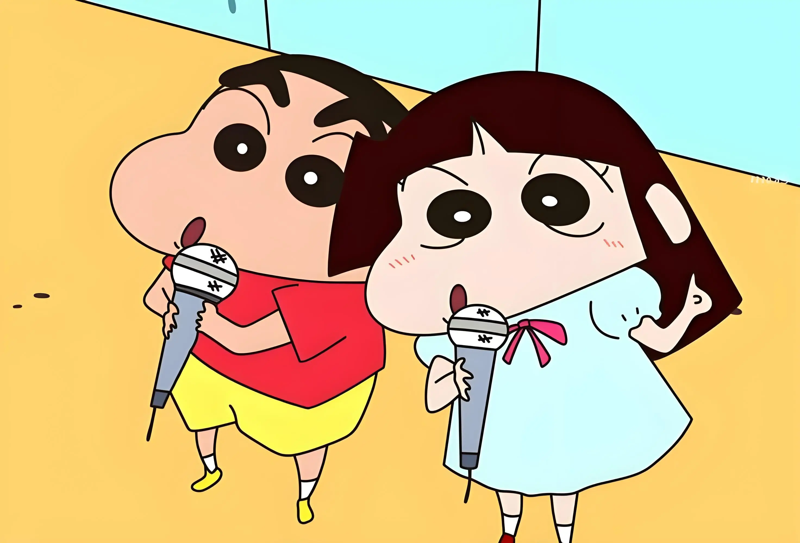
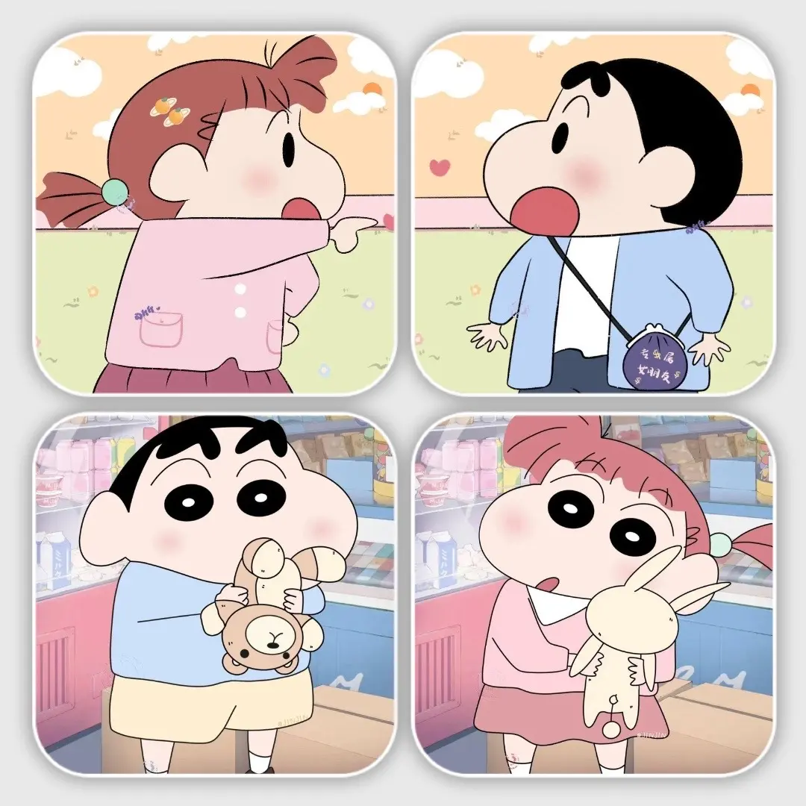
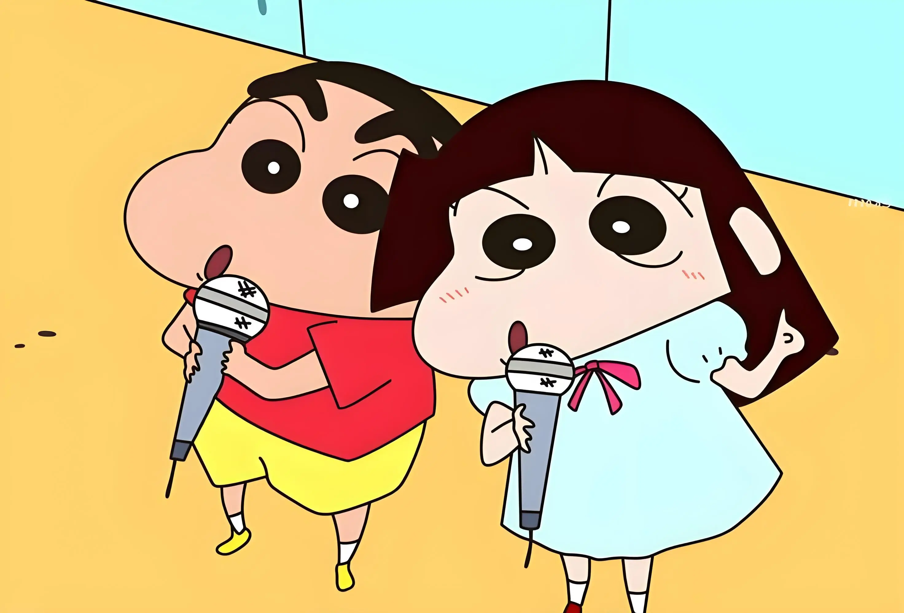

肆
过了25号…
我们就又要分开了
可是这一次，我不想再沉默
内心告诉我——
如果这次还不告诉你，我会后悔的
所以这一次，我不想留下遗憾
距离 2月25日
计算中...
有些话，一直没有说出口
这是我给你做的网页，也是我算是我走之前给你的一个礼物吧！！！
 



我有一个喜欢的女孩，喜欢了很久的女孩，她"像风一样"让人琢磨不透，她有时很开心，有时很可爱，有时情绪低落，有时也很抽象，她会在遇到难题的时候勇敢的逃避，她会在别人离开她的时候选择放弃，这个世界的pua和她无关，她就是这个世界的奇女子，一个那么特别，那么自由的灵魂！在有些人眼中，可能别人会觉得她不守规矩，神经大条，一惊一乍，可在我的世界里，她就像是那么的可爱，自由和美好的女孩儿，可是这些话我真的说不出口，我想她是知道的，因为我们是很熟悉的朋友！可是，过了25号，我们就又要分开了，可我不想分开了，我的内心告诉我，如果这次还不告诉她，我会后悔的。
那些小小的喜好，那些细微的习惯
我都记得，一样也没忘
她喜欢的动漫是蜡笔小新，喜欢的韩国女团是k-pop（aespa 和 IU)，她的例假是每个月的18，19号左右，她笑起来像拉布布，她长的像大头娃娃，她是我的高中唯一的女性同桌，她知道我的过往情史，她喜欢爱林英语的英语课，她喜欢喝酒，她喜欢的水果是草莓，她也喜欢艺术，她喜欢打麻将，她喜欢护肤，她喜欢赚钱，她的星座是天秤座，她也爱睡觉，她数学很差，她喜欢文学，她很漂亮，特别是那个大眼睛，她喜欢的颜色是粉色，她在我心里是个出色的服装代言人，她艺术审美很好。
你总说自己是个"混子"
可我清楚你有多不容易
她有时候也很坚强，在韩国发高烧的时候自己一个人在屋里硬抗，当时我想买机票飞过去可是我不能，她不回电话的时候我以为她晕过去了，我很担心！她一个人在韩国既要打工又要读书很辛苦，虽然说她是混子，但其实我清楚她的不容易，她胃痛着也坚持读书，考试，工作，她压力大的时候喜欢打游戏解压，她经常打工到半夜才回家。
我们就又要分开了
可是这一次，我不想再沉默
内心告诉我——
如果这次还不告诉你，我会后悔的
所以这一次，我不想留下遗憾
嘿，
这些话我一直说不出口，但我知道，你大概是知道的，因为我们是那么熟悉的朋友。
可是"朋友"这两个字，我已经不想再说了。
我喜欢你开心时的笑容，喜欢你可爱时的样子，喜欢你低落时也愿意在我面前展现脆弱的信任。
我喜欢你遇到难题时"勇敢地逃避"，喜欢你那些让人捉摸不透的瞬间——
因为那都是你，真实的你。
这个世界的PUA和你无关，你就是你，一个那么特别、那么自由的灵魂。
而我，只是一个被这样的你深深吸引的人。
我喜欢你，喜欢了很久很久。
—— 你知道的那个人
我不求你的肯定回应，我只是表达我对你的喜欢！这样我就没有遗憾了！